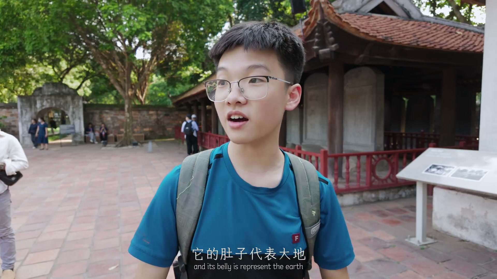

同一张关键帧：旧版把 OCR 原文整段糊在图下面；新版给一句结合「前后字幕 + 画面文字」的小结，OCR 收进折叠区。
▲ 00:35 · 跳转到此处
→ 读者只看到一堆碎片文字，和只贴图片没有本质区别。
▲ 00:35 · 跳转到此处
画面解读：博主在校园里采访越南本地大学生 Grace（上海交大食品科学与工程专业），由此开启"本地人视角看越南"的对比环节。
Grace 上海交通大学 食品科学与工程专业 我要问出那个经典问题了

▲ 05:02 · 跳转到此处
画面解读：在河内文庙的讲解区，本地学生正介绍神龟石像——"它的肚子代表大地"，对应河内还剑湖"神龟驮剑"的建城传说。
它的肚子代表大地 and its belly is represent the earth
→ 默认看图 + 读解读即可学习；需要逐字核对时再展开「画面文字」。